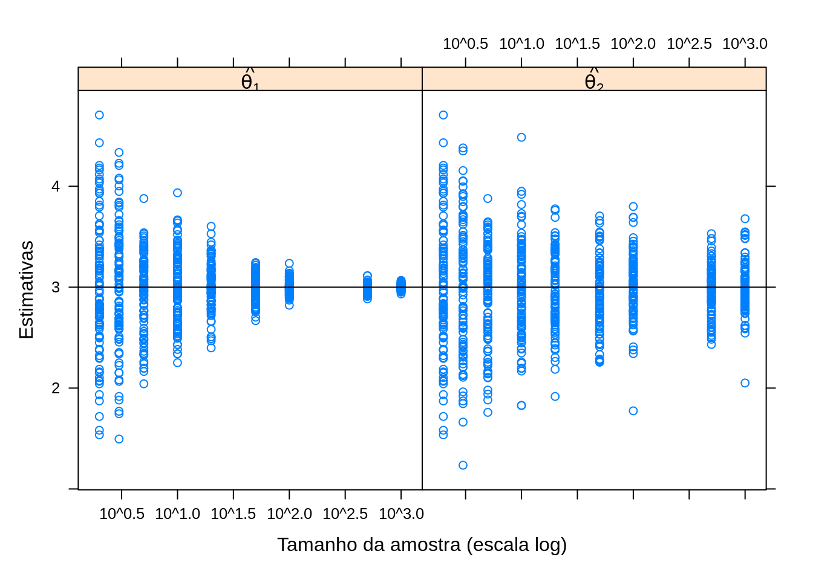
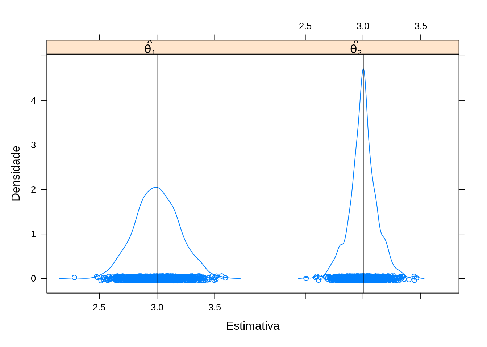
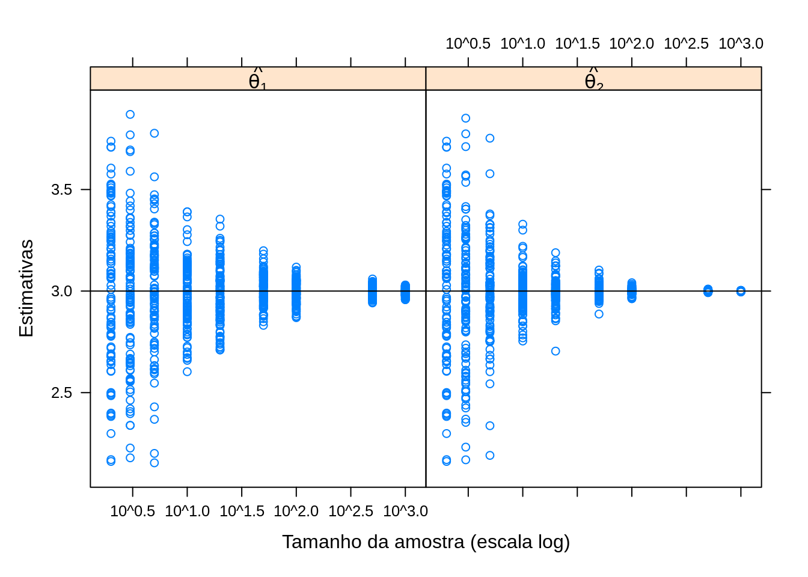

Métodos de Monte Carlo em inferência estatística
Estimadores e propriedades de estimadores
Fernando P. Mayer
1 Introdução
- Métodos de Monte Carlo representam uma série de ferramentas computacionais na estatística moderna.
- Os métodos de Monte Carlo podem se referir à qualquer método em inferência estatística ou análise numérica onde algum método de simulação é utilizado.
- Os métodos de Monte Carlo podem ser usados para:
- Estimar parâmetros através da distribuição amostral de uma estatística
- Calcular o erro quadrático médio (EQM) de uma estimativa
- Estimar o nível de cobertura de intervalos de confiança
- Encontrar a taxa empírica do erro tipo I em um teste de hipótese
- Estimar o poder de um teste de hipótese
- Comparar a performance de diferentes procedimentos aplicados a um mesmo problema
- Na inferência estatística, sabemos que sempre existe incerteza associada a qualquer estimativa
- Para investigar a incerteza, o método apresentado aqui, também chamado de bootstrap paramétrico, utiliza repetidas amostragens de um modelo probabilístico
- Se podemos simular o processo estocástico que gerou os dados, através da geração de diferentes amostras sob as mesmas condições, esperamos ao final ter uma réplica aproximada do processo em si, refletido nas amostras
2 Inferência estatística
Seja \(X\) uma variável aleatória com função densidade (ou de probabilidade) denotada por \(f(x,\theta)\), em que \(\theta\) é um parâmetro desconhecido. Chamamos de inferência estatística o problema que consiste em especificar um ou mais valores para \(\theta\), baseado em um conjunto de valores \(X\).
A inferência pode ser feita de duas formas:
- estimativa pontual
- estimativa intervalar
Redução de dados
- Um experimentador usa as informações em uma amostra aleatória \(X_1, \ldots, X_n\) para se fazer inferências sobre \(\theta\).
- Normalmente \(n\) é grande e fica inviável tirar conclusões baseadas em uma longa lista de números.
- Por isso, um dos objetivos da inferência estatística é resumir as informações de uma amostra, da maneira mais compacta possível, mas que ao mesmo tempo seja também informativa.
- Normalmente esse resumo é feito por meio de estatísticas, por exemplo, a média amostral e a variância amostral.
População e amostra
- O conjunto de valores de uma característica associada a uma coleção de indivíduos ou objetos de interesse é dito ser uma população.
- Uma sequência \(X_1, \ldots, X_n\) de \(n\) variáveis aleatórias independentes e identicamente distribuídas (iid) com função densidade (ou de probabilidade) \(f(x,\theta)\) é dita ser uma amostra aleatória de tamanho \(n\) da distribuição de \(X\).
- Como normalmente \(n>1\), então temos que a fdp ou fp conjunta será \[ f(\boldsymbol{x, \theta}) = f(x_1, \ldots, x_n, \theta) = \prod_{i=1}^n f(x_i, \theta). \]
3 Estimadores
Espaço paramétrico
- O conjunto \(\Theta\) em que \(\theta\) pode assumir seus valores é chamado de espaço paramétrico
Estimador
Qualquer estatística que assume valores em \(\Theta\) é um estimador para \(\theta\).
Dessa forma, um estimador pontual para \(\theta\) é qualquer estatística que possa ser usada para estimar esse parâmetro, ou seja, \[\hat{\theta} = T(\mathbf{X})\]
Observações:
- Todo estimador é uma estatística, mas nem toda estatística é um estimador.
- O valor assumido pelo estimador pontual é chamado de estimativa pontual,\[\hat{\theta} = T(\mathbf{X}) = T(X_1, \ldots, X_n) = t\] ou seja, o estimador é uma função da amostra, e a estimativa é o valor observado de um estimador (um número) de uma amostra particular.
Estimação pontual
- A ideia geral por trás da estimação pontual é muito simples:
- Quando a amostragem é feita a partir de uma população descrita por uma função \(f(x,\theta)\), o conhecimento de \(\theta\) a partir da amostra, gera todo o conhecimento para a população.
- Dessa forma, é natural que se procure um método para se achar um bom estimador para \(\theta\).
- Existem algumas propriedades que definem o que é um bom estimador, ou o “melhor” estimador entre uma série de candidatos.
Localização do problema:
- Considere \(X_1, \ldots, X_n\) uma amostra aleatóra de uma variável aleatória \(X\) com fdp ou fp \(f(x,\theta)\), \(\theta \in \Theta\). Sejam: \[
\hat{\theta}_1 = T_1(X_1, ..., X_n) \quad \quad \hat{\theta}_2 =
T_2(X_1, ..., X_n)
\] Qual dos dois estimadores pontuais é melhor para \(\theta\)?
- Como não conhecemos \(\theta\), não podemos afirmar que \(\hat{\theta}_1\) é melhor do que \(\hat{\theta}_2\) e vice-versa.
- O problema da estimação pontual é então escolher um estimador \(\hat{\theta}\) que se aproxime de \(\theta\) segundo algumas propriedades.
4 Propriedades dos estimadores
De modo geral, um “bom” estimador deve ser:
- Não viesado
- Consistente
- Eficiente
4.1 Viés
Erro quadrático médio (EQM)
O Erro Quadrático Médio (EQM) de um estimador \(\hat{\theta}\) de \(\theta\) é dado por \[\begin{align*} \text{EQM}[\hat{\theta}] &= \text{E}[(\hat{\theta} - \theta)^2] \\ &= \text{Var}[\hat{\theta}] + \text{B}[\hat{\theta}]^2 \end{align*}\] onde \[\text{B}[\hat{\theta}] = \text{E}[\hat\theta] - \theta\] é denominado de viés ou vício do estimador \(\hat\theta\). Portanto, dizemos que um estimador é não viesado para \(\theta\) quando \[\text{B}[\hat{\theta}] = 0 \quad \Rightarrow \quad \text{E}[\hat{\theta}] = \theta\]
O EQM é comumente empregado na comparação de estimadores. Podemos dizer que \(\hat\theta_1\) é melhor do que \(\hat\theta_2\) se \[ \text{EQM}[\hat{\theta}_1] \leq \text{EQM}[\hat{\theta}_2] \] para todo \(\theta\), com \(\leq\) substituído por \(<\) pelo menos para um valor de \(\theta\).
Se os estimadores são não viciados, então \[ \text{Var}[\hat{\theta}_1] \leq \text{Var}[\hat{\theta}_2] \] Nesse caso, \(\hat{\theta}_1\) é dito ser o Estimador Não Viciado de Variância Uniformemente Mínima (ENVVUM).
Estimador não viesado
Seja \((X_1, \ldots, X_n)\), uma amostra aleatória de uma variável aleatória com fdp ou fp \(f(x,\theta)\), \(\theta \in \Theta\), dizemos que o estimador \(\hat{\theta} = T(\mathbf{X})\) é não viesado para \(\theta\) se \[\text{E}[\hat{\theta}] = \text{E}[T(\mathbf{X})] = \theta \qquad \forall \, \theta \in \Theta\]
Um estimador \(\hat\theta\) é dito assintoticamente não viesado se \[\lim_{n \to \infty} \text{E}[\hat{\theta}] = \theta\] Ou seja, para grandes amostras, \(\hat\theta\) passa a ser imparcial.
4.2 Consistência
Estimador consistente
Seja \((X_1, \ldots, X_n)\), uma amostra aleatória de uma variável aleatória com fdp ou fp \(f(x,\theta)\), \(\theta \in \Theta\), o estimador \(\hat{\theta} = T(\mathbf{X})\) é consistente para \(\theta\) se satisfaz simultaneamente \[\lim_{n \to \infty} \text{E}[\hat{\theta}] = \theta\] e \[\lim_{n \to \infty} \text{Var}[\hat{\theta}] = 0\]
Exemplo (média amostral)
Média amostral \(\bar{x} = \frac{1}{n} \sum_{i=1}^{n} x_i\) como estimador da média populacional \(\mu\): \[ \text{E}(\bar{x}) = \text{E} \left[ \frac{1}{n} \sum_{i=1}^{n} x_i \right] = \mu \]
\[ \text{Var}(\bar{x}) = \text{Var} \left[ \frac{1}{n} \sum_{i=1}^{n} x_i \right] = \frac{\sigma^2}{n} \] Portanto \(\bar{x}\) é um estimador não viesado e consistente para \(\mu\).
Exemplo (variância amostral)
Variância amostral \(\hat{\sigma}^2 = \frac{1}{n} \sum_{i=1}^{n} (x_i - \bar{x})^2\) como estimador da variância populacional \(\sigma^2\): \[ \text{E}(\hat{\sigma}^2) = \text{E} \left[ \frac{1}{n} \sum_{i=1}^{n} (x_i - \bar{x})^2 \right] = \left( \frac{n-1}{n} \right) \sigma^2 \] Portanto \(\hat{\sigma}^2\) é um estimador viesado para \(\sigma^2\). (Embora seja um estimador assintoticamente não viesado).
Para eliminar esse vício, podemos definir então um novo estimador: \(S^2 = \frac{1}{n-1} \sum_{i=1}^{n} (x_i - \bar{x})^2\), e \[ \text{E}(S^2) = \text{E} \left[ \frac{1}{n-1} \sum_{i=1}^{n} (x_i - \bar{x})^2 \right] = \sigma^2 \] que é então um estimador não viesado para \(\sigma^2\).
4.3 Eficiência
Eficiência relativa
Sejam \(\hat{\theta}_1 = T_1(\mathbf{X})\) e \(\hat{\theta}_2 = T_2(\mathbf{X})\) dois estimadores pontuais não viesados para \(\theta\). A eficiência relativa de \(\hat{\theta}_1\) em relação a \(\hat{\theta}_2\) é \[\text{ER}[\hat{\theta}_1, \hat{\theta}_2] = \frac{\text{Var}[\hat{\theta}_1]}{\text{Var}[\hat{\theta}_2]}\]
Se:
- \(\text{ER}[\hat{\theta}_1, \hat{\theta}_2] > 1\) \(\Rightarrow\) \(\hat\theta_2\) é mais eficiente
- \(\text{ER}[\hat{\theta}_1, \hat{\theta}_2] < 1\) \(\Rightarrow\) \(\hat\theta_1\) é mais eficiente
Exemplo (média e mediana)
Uma amostra \((X_1, \ldots, X_n)\) é retirada de uma população com \(X \sim \text{N}(\mu, \sigma^2)\), e dois estimadores são propostos para \(\mu\): \[ \hat{\mu}_1 = \bar{X} \quad \text{e} \quad \hat{\mu}_2 = \text{mediana}(X_1, \ldots, X_n) \] Qual dos dois é melhor para \(\mu\)?
Podemos notar que \[\begin{align*} \text{E}(\hat{\mu}_1) &= \text{E}(\bar{X}) = \mu \\ \text{Var}(\hat{\mu}_1) &= \text{Var}(\bar{X}) = \sigma^2/n \end{align*}\] \[\begin{align*} \text{E}(\hat{\mu}_2) &= \text{E}(\text{mediana}(X_1, \ldots, X_n)) = \mu \\ \text{Var}(\hat{\mu}_2) &= \text{Var}(\text{mediana}(X_1, \ldots, X_n)) = (\pi/2)(\sigma^2/n) \end{align*}\] Portanto, ambos são estimadores não viesados e consistentes. Mas: \[ \text{ER}[\hat{\mu}_1, \hat{\mu}_2] = \frac{\text{Var}[\hat{\mu}_1]}{\text{Var}[\hat{\mu}_2]} = \frac{\sigma^2/n}{(\pi/2)(\sigma^2/n)} = \frac{2}{\pi} = 0,63 \] Como \(\text{ER}[\hat{\mu}_1, \hat{\mu}_2] < 1\) então \(\hat{\mu}_1 = \bar{X}\) é mais eficiente.
4.4 Erro padrão
O erro padrão de um estimador dá uma ideia da precisão da estimativa.
O erro padrão (EP) de um estimador é o seu desvio-padrão (raíz quadrada da variância), ou seja, \[ \text{EP}(\hat\theta) = \sqrt{\text{Var}(\hat\theta)} \]
Exemplo (erro padrão da média)
Sabemos que a distribuição de \(\bar{X}\) tem média \(\mu\) e variância \(\sigma^2/n\). Então o erro padrão de \(\bar{X}\) é \[ \text{EP}(\bar{X}) = \sqrt{\text{Var}(\bar{X})} = \sqrt{\frac{\sigma^2}{n}} = \frac{\sigma}{\sqrt{n}} \]
5 Métodos de Monte Carlo para estimação
Suponha \(X_1, \ldots, X_n\) uma amostra aleatória da distribuição de \(X\). Um estimador \(\hat\theta\) para um parâmetro \(\theta\) é a função \[ \hat\theta = T(x_1, \ldots, x_n) \] da amostra. Seja \(\mathbf{x} = (x_1, \ldots, x_n)' \in \mathbb{R}^n\), e vamos denotar por \(\mathbf{x}^{(1)}, \mathbf{x}^{(2)}, \ldots\), uma sequência de amostras aleatórias independentes geradas a partir da distribuição de \(X\).
Valores aleatórios da distribuição amostral de \(\hat\theta\) podem ser obtidos através de \(N\) repetidas amostras aleatórias independentes \(\mathbf{x}^{(j)}\), e calculando-se \[ \hat\theta^{(j)} = T(x_1^{(j)}, \ldots, x_n^{(j)}) \quad j = 1, \ldots, N \]
Dessa forma, se \(\hat\theta\) é uma estimativa de \(\theta\) da distribuição \(f\), então as amostras de um bootstrap paramétrico de \(f_{\hat\theta}\) são \[ f_{\hat\theta} \longrightarrow \mathbf{x}^{(j)} \longrightarrow \hat\theta^{(j)} \]
A distribuição amostral de \(\hat\theta^{(j)}\) deve ser próxima da distribuição amostral verdadeira para \(N\) grande. A média da distribuição \[ \hat\theta_{MC} = \frac{1}{N} \sum_{j=1}^{N} \hat\theta^{(j)} \] será então uma estimativa pontual para \(\theta\).
Um dos principais objetivos de se usar métodos de Monte Carlo para estimação de algum parâmetro, é o cálculo da incerteza associada à estimativa, expressa geralmente pelo erro padrão.
- Em muitos casos, o erro padrão de uma estimativa pode ser obtido diretamente de forma analítica
- Em casos mais complexos, a forma analítica pode não existir e mesmo a distribuição amostral pode ser desconhecida
- Nesses casos, a distribuição amostral empírica construída pelo método de Monte Carlo pode ser utilizada
Como a estimativa pontual (de Monte Carlo) para \(\theta\) é uma média (\(\hat{\theta}_{MC}\)), então seu erro padrão será \(\sqrt{\text{Var}(\theta)/N}\) (definição de erro padrão de uma média). Quando a distribuição exata de \(\theta\) for desconhecida, podemos substituir a distribuição \(F_{\theta}\) pela distribuição empírica \(F_N\) da amostra \(\hat{\theta}^{(1)}, \ldots, \hat{\theta}^{(N)}\). Um estimador do tipo plug-in para a variância de \(\theta\) será então
\[ \widehat{\text{Var}}(\theta) = \frac{1}{N} \sum_{j=1}^{N} (\theta^{(j)} - \hat{\theta}_{MC})^2 \]
Note que \(\widehat{\text{Var}}(\theta)\) é a variância populacional da pseudo-população finita \(\{\hat{\theta}^{(1)}, \ldots, \hat{\theta}^{(N)}\}\) com distribuição \(F_N\). Com isso, o correspondente estimador para o erro padrão de \(\hat{\theta}_{MC}\) é
\[\begin{align*} \widehat{\text{EP}}_{MC} &= \frac{1}{\sqrt{N}} \sqrt{\frac{1}{N} \sum_{j=1}^{N} (\hat\theta^{(j)} - \hat\theta_{MC})^2} \\ &= \frac{1}{N} \sqrt{\sum_{j=1}^{N} (\hat\theta^{(j)} - \hat\theta_{MC})^2} \end{align*}\]
Usando o estimador não viesado para \(\text{Var}(\theta)\), temos
\[ \widehat{\text{EP}}_{MC} = \frac{1}{\sqrt{N}} \sqrt{\frac{1}{N-1} \sum_{j=1}^{N} (\hat\theta^{(j)} - \hat\theta_{MC})^2} \]
No entanto, em um experimento de Monte Carlo, o tamanho amostral (\(N\)) é grande, de forma que as duas estimativas serão aproximadamente iguais.
No R, as funções var() e sd() calculam a variância e o desvio padrão não viesados (com o denominador \(n-1\)). Dessa forma, se for utilizar alguma destas funções para calcular o erro-padrão, utilize a última equação mostrada acima.
Por exemplo, se x é um vetor de tamanho \(N\) com as estimativas \(\hat{\theta}^{(1)}, \ldots, \hat{\theta}^{(N)}\), então o erro padrão pode ser calculado como
sd(x)/sqrt(N)6 Avaliação de estimadores
6.1 Exemplo (normal)
Considere uma amostra aleatória (\(X_1, \ldots, X_n\)) de uma variável aleatória \(X \sim \text{N}(\mu = 3, \sigma^2 = 1)\) e os estimadores pontuais para \(\mu\) \[\hat{\theta}_1 = \frac{1}{n} \sum_{i=1}^n X_i \qquad \text{e} \qquad \hat{\theta}_2 = \frac{X_{(1)}+X_{(n)}}{2}\] Qual dos dois estimadores pode ser considerado como o melhor para estimar o verdadeiro valor de \(\mu\)?
Considere os seguintes pseudo-códigos para um estudo de simulação do comportamento destes dois estimadores:
Pseudo-código 1 (viés, precisão e eficiência)
- Simule uma amostra de tamanho \(n = 10\) da distribuição considerada
- Para essa amostra, calcule a média (\(\hat{\theta}_1\)) e o ponto médio (\(\hat{\theta}_2\))
- Repita os passos (1) e (2) acima \(N = 1000\) vezes
- Faça um gráfico da densidade das \(N = 1000\) estimativas de \(\hat{\theta}_1\) e \(\hat{\theta}_2\) e verifique seu comportamento
library(lattice)
library(latticeExtra)
library(plyr)## Define valores
N <- 1000
n <- 10
## Gera amostras e calcula estimativas
set.seed(1)
th1 <- replicate(N, mean(rnorm(n, mean = 3, sd = 1)))
th2 <- replicate(N, mean(range(rnorm(n, mean = 3, sd = 1))))
## Converte para data frame
L <- list(th1 = data.frame(est = th1), th2 = data.frame(est = th2))
L <- ldply(L)
str(L)# 'data.frame': 2000 obs. of 2 variables:
# $ .id: chr "th1" "th1" "th1" "th1" ...
# $ est: num 3.13 3.25 2.87 3.12 3.13 ...## Distribuição das estimativas
densityplot(
~ est | .id, data = L,
panel = function(x, ...){
panel.densityplot(x, ...)
panel.abline(v = mean(x))
},
xlab = "Estimativa", ylab = "Densidade",
strip = strip.custom(
factor.levels = c(expression(hat(theta[1])),
expression(hat(theta[2]))))
)## Média das estimativas
tapply(L$est, L$.id, mean)# th1 th2
# 2.993463 3.019900## Erro padrão das estimativas
tapply(L$est, L$.id, function(x) sd(x)/sqrt(N))# th1 th2
# 0.01022276 0.01348322## Eficiência relativa
var(L$est[L$.id == "th1"])/var(L$est[L$.id == "th2"])# [1] 0.5748422Pseudo-código 2 (viés e consistência)
- Simule amostras de tamanhos (\(n\)) 2, 3, 5, 10, 20, 50, 100, 500, 1000 da distribuição considerada
- Para cada amostra de tamanho \(n\), calcule a média (\(\hat{\theta}_1\)) e o ponto médio (\(\hat{\theta}_2\))
- Repita os passos (1) e (2) acima \(N = 100\) vezes
- Faça um gráfico das \(N = 100\) estimativas de \(\hat{\theta}_1\) e \(\hat{\theta}_2\) para cada tamanho de amostra \(n\) e verifique seu comportamento
## Define valores
N <- 100
nval <- c(2, 3, 5, 10, 20, 50, 100, 500, 1000)
## Calcula média para cada tamanho de amostra
set.seed(1)
th1 <- sapply(
nval,
function(n){
replicate(N, mean(rnorm(n, mean = 3, sd = 1)))
}
)
str(th1)# num [1:100, 1:9] 2.78 3.38 2.75 3.61 3.14 ...th1 <- stack(as.data.frame(th1))
levels(th1$ind) <- as.character(nval)
th1$ind <- as.numeric(as.character(th1$ind))
## Calcula ponto médio para cada tamanho de amostra
set.seed(1)
th2 <- sapply(
nval,
function(n){
replicate(N, mean(range(rnorm(n, mean = 3, sd = 1))))
}
)
str(th2)# num [1:100, 1:9] 2.78 3.38 2.75 3.61 3.14 ...th2 <- stack(as.data.frame(th2))
levels(th2$ind) <- as.character(nval)
th2$ind <- as.numeric(as.character(th2$ind))
## Converte para data frame
L <- list(th1 = th1, th2 = th2)
L <- ldply(L)
L$.id <- factor(L$.id)
## Distribuição para cada tamanho de amostra
xyplot(
values ~ ind | factor(.id), L,
xlab = "Tamanho da amostra (escala log)", ylab = "Estimativas",
strip = strip.custom(
factor.levels =
c(expression(hat(theta[1])),
expression(hat(theta[2])))),
scales = list(x = list(log = 10))) +
layer(panel.abline(h = 3))
6.2 Exemplo (uniforme)
Considere uma amostra aleatória (\(X_1, \ldots, X_n\)) de uma variável aleatória \(Y \sim \text{U}(\text{min} = 2, \text{max} = 4)\) (distribuição uniforme no intervalo [2,4]) e os estimadores pontuais para \(\mu\) \[\hat{\theta}_1 = \frac{1}{n} \sum_{i=1}^n X_i \qquad \text{e} \qquad \hat{\theta}_2 = \frac{X_{(1)}+X_{(n)}}{2}\] Qual dos dois estimadores pode ser considerado como o melhor para estimar a média de \(Y\)?
Pseudo-código 1 (viés, precisão e eficiência)
N <- 1000
n <- 10
set.seed(1)
th1 <- replicate(N, mean(runif(n, min = 2, max = 4)))
th2 <- replicate(N, mean(range(runif(n, min = 2, max = 4))))
L <- list(th1 = data.frame(est = th1), th2 = data.frame(est = th2))
L <- ldply(L)
str(L)# 'data.frame': 2000 obs. of 2 variables:
# $ .id: chr "th1" "th1" "th1" "th1" ...
# $ est: num 3.1 3.12 2.84 3.06 3.21 ...densityplot(
~est | .id, data = L,
panel = function(x, ...){
panel.densityplot(x, ...)
panel.abline(v = mean(x))
},
xlab = "Estimativa", ylab = "Densidade",
strip = strip.custom(
factor.levels =
c(expression(hat(theta[1])),
expression(hat(theta[2])))))
## Média das estimativas
tapply(L$est, L$.id, mean)# th1 th2
# 3.000336 3.002104## Erro padrão das estimativas
tapply(L$est, L$.id, sd)# th1 th2
# 0.1902737 0.1205587## Eficiência relativa
var(L$est[L$.id == "th1"])/var(L$est[L$.id == "th2"])# [1] 2.490924Pseudo-código 2 (viés e consistência)
N <- 100
nval <- c(2, 3, 5, 10, 20, 50, 100, 500, 1000)
set.seed(1)
th1 <- sapply(
nval,
function(n){
replicate(N, mean(runif(n, min = 2, max = 4)))
}
)
str(th1)# num [1:100, 1:9] 2.64 3.48 3.1 3.61 2.69 ...th1 <- stack(as.data.frame(th1))
levels(th1$ind) <- as.character(nval)
th1$ind <- as.numeric(as.character(th1$ind))
set.seed(1)
th2 <- sapply(
nval,
function(n){
replicate(N, mean(range(runif(n, min = 2, max = 4))))
}
)
str(th2)# num [1:100, 1:9] 2.64 3.48 3.1 3.61 2.69 ...th2 <- stack(as.data.frame(th2))
levels(th2$ind) <- as.character(nval)
th2$ind <- as.numeric(as.character(th2$ind))
L <- list(th1 = th1, th2 = th2)
L <- ldply(L)
L$.id <- factor(L$.id)
xyplot(
values ~ ind | .id, L,
xlab = "Tamanho da amostra (escala log)", ylab = "Estimativas",
strip = strip.custom(
factor.levels =
c(expression(hat(theta[1])),
expression(hat(theta[2])))),
scales = list(x = list(log = 10))) +
layer(panel.abline(h = 3))
6.3 Exemplo (média aparada)
Considere o problema de se obter uma estimativa de centro de uma distribuição simétrica, sem considerar a média amostral. Podemos pensar em dois estimadores: a média aparada e a mediana. Qual dos dois estimadores é “melhor” para estimar a média populacional \(\mu\)?
Suponha que \(X_1, \ldots, X_n\) é uma amsotra aleatória de \(X\), e \(X_{(1)}, \ldots, X_{(n)}\) é a correspondente amostra ordenada. A média aparada de primeiro nível é calculada retirando-se o menor e o maior valor da amostra. De maneira mais geral, a média aparada de \(k\)-ésimo nível pode ser definida como \[ \overline{X}_{[-k]} = \frac{1}{n-2k} \sum_{i=k+1}^{n-k} X_{(i)} \]
Vamos obter o EQM da média aparada de primeiro nível (\(\overline{X}_{[-1]}\)) assumindo que \(X \sim \text{N}(0,1)\). Nesse exemplo, a média da distribuição é zero, e o parâmetro de interesse é \(\theta = \text{E}[\overline{X}] = \text{E}[\overline{X}_{[-1]}] = 0\). Considere que a média aparada de primeiro nível é \(T\). Uma estimativa de \(\text{EQM}[T]\) baseado em \(N\) replicações é obtida da seguinte forma:
- Gera as repetições \(T^{(j)}, j=1, \ldots, N\) repetindo:
- Gere \(x_1^{(j)}, \ldots, x_n^{(j)}\) iid da distribuição de \(X\)
- Ordene \(x_1^{(j)}, \ldots, x_n^{(j)}\) em ordem crescente, \(x_{(1)}^{(j)} \leq \ldots \leq x_{(n)}^{(j)}\)
- Calcule \(T^{(j)} = \frac{1}{n-2} \sum_{i=2}^{n-1} x_{(i)}^{(j)}\)
- Calcule \(\widehat{\text{EQM}} = \frac{1}{N} \sum_{j=1}^{N} (T^{(j)} - \theta)^2 = \frac{1}{N} \sum_{j=1}^{N} (T^{(j)})^2\)
## Tamanho da amostra
n <- 20
## Número de repetições
N <- 1000
tmean1 <- numeric(N)
for (i in 1:N) {
x <- sort(rnorm(n))
tmean1[i] <- sum(x[2:(n - 1)])/(n - 2)
}
## Estimativa pontual
(m.tmean1 <- mean(tmean1))# [1] -0.002549744## Variância
sum((tmean1 - m.tmean1)^2)/(N - 1)# [1] 0.05046943## Erro padrão = desvio padrão da distribuição amostral
sqrt(sum((tmean1 - m.tmean1)^2))/(N - 1)# [1] 0.007107739## EQM
(eqm1 <- mean(tmean1^2))# [1] 0.05042546hist(tmean1)Note que a média aparada é um estimador não viesado para a média populacional, portanto \(\text{EQM}[\theta] = \text{Var}[\theta] = \text{Var}[X]/n\), que é igual a \(1/20 = 0.05\), o que mostra que nossa estimativa está próxima.
Repare que a mediana também é uma média aparada: ela “apara” todos os valores das caudas menos um (quando \(n\) for ímpar), ou dois (quando \(n\) for par), e calcula a média. Portanto, podemos reptir o mesmo procedimento para a mediana.
n <- 20
N <- 1000
tmean2 <- numeric(N)
for (i in 1:N) {
x <- sort(rnorm(n))
tmean2[i] <- median(x)
}
## Estimativa pontual
(m.tmean2 <- mean(tmean2))# [1] 0.00801335## Variância
sum((tmean2 - m.tmean2)^2)/(N - 1)# [1] 0.06868125## Erro padrão = desvio padrão da distribuição amostral
sqrt(sum((tmean2 - m.tmean2)^2))/(N - 1)# [1] 0.008291562## EQM
(eqm2 <- mean(tmean2^2))# [1] 0.06867678hist(tmean2)Agora podemos comparar qual dos dois estimadores é o melhor para a média populacional, através dos EQMs.
## Qual dos dois possui menor EQM
eqm1 <= eqm2# [1] TRUE## Eficiência relativa
eqm1/eqm2# [1] 0.7342432Na última linha calculamos também a eficiência relativa entre dois estimadores, ou seja, a eficiência relativa de \(\hat{\theta}_1\) em relação a \(\hat{\theta}_2\) é \[ \text{ER}[\hat{\theta}_1, \hat{\theta}_2] = \frac{\text{Var}[\hat{\theta}_1]}{\text{Var}[\hat{\theta}_2]} \]
Por esses resultados concluimos que ambos estimadores, média aparada de primeiro nível e mediana, são não viesados para estimar a média populacional \(\mu\), mas a média aparada é um estimador melhor, ou mais eficiente do que a mediana.
6.4 Exemplo (erro padrão)
Suponha \(X_1, X_2\) são duas VAs iid de uma normal padrão. Usando simulação de Monte Carlo, obtenha uma estimativa de \(\text{E}(|X_1 - X_2|)\), e seu erro padrão.
Para estimar \(\theta = \text{E}(g(X_1, X_2)) = \text{E}(|X_1 - X_2|)\), baseado em \(N\) amostras:
- Gere as variáveis aleatórias \(\mathbb{x}^{(j)} = (x_1^{(j)}, x_2^{(j)})\) da normal padrão, \(j = 1, \ldots, N\).
- Calcule \(\hat\theta^{(j)} = g_j(x_1^{(j)}, x_2^{(j)}) = |x_1^{(j)} - x_2^{(j)}|\), e calcule a média.
N <- 1000
g <- numeric(N)
for (i in 1:N) {
x <- rnorm(2)
g[i] <- abs(x[1] - x[2])
}
(est <- mean(g))# [1] 1.105322hist(g)Por integração, o resultado é \(\text{E}(|X_1 - X_2|) = 2/\sqrt{\pi} = 1.1284\).
Em uma amostra de Monte Carlo, o tamanho da amostra é \(N\), por isso, o erro padrão da estimativa será
## Variância da distribuição amostral
sum((g - est)^2)/(N - 1)# [1] 0.6719454var(g)# [1] 0.6719454## Erro padrão = desvio padrão da distribuição amostral
sqrt(sum((g - est)^2))/N # viesado# [1] 0.02590895sd(g)/sqrt(N) # não viiesado# [1] 0.02592191Pode-se mostrar que o valor exato é \(ep = \sqrt{(2 - 4/\pi)/N} = 0.0269\).
6.5 Exemplo (estimativa de nível de confiança)
Seja \(X_1, \ldots, X_n\) uma amostra aleatória de uma \(\text{N}(\mu, \sigma^2)\), onde \(s^2\) é a variância amostral. Considere o problema de estimar um intervalo de confiança para \(s^2\).
Do Teorema Central do Limite (TCL) sabemos que \(\bar{X} \sim \text{N}(\mu, \frac{\sigma^2}{n})\). Como não conhecemos \(\sigma^2\), usamos \(s^2\) no lugar. Assim, temos que: \[ \widehat{Var[\bar{X}]} = \frac{s^2}{n} \quad \text{e} \quad \widehat{EP[\bar{X}]} = \frac{s}{\sqrt{n}} \]
Para obter a variância de \(s^2\), precisamos lembrar que \[ \frac{(n-1)s^2}{\sigma^2} \sim \chi_{(n-1)}^{2} \]
Lembrando também que para uma variável aleatória \(X\) com distribuição qui-quadrado com \(k\) graus de liberdade, \(X \sim \chi^2_k\), temos \(E[X] = k\), e \(Var[X] = 2k\). Assim, calculamos a esperança como
\[\begin{align*} E\left[ \frac{(n-1)s^2}{\sigma^2} \right ] &= n-1 \\ \frac{(n-1)}{\sigma^2} E[s^2] &= n-1 \\ E[s^2] &= \frac{(n-1)\sigma^2}{(n-1)} \\ E[s^2] &= \sigma^2 \end{align*}\]
Portanto, confirmamos que essa é uma estimativa não viesada. Da mesma forma, calculamos a variância como:
\[\begin{align*} Var\left[ \frac{(n-1)s^2}{\sigma^2} \right ] &= 2(n-1) \\ \frac{(n-1)^2}{\sigma^4} Var[s^2] &= 2(n-1) \\ Var[s^2] &= \frac{2(n-1)\sigma^4}{(n-1)^2} \\ Var[s^2] &= \frac{2\sigma^4}{n-1} = \frac{2(\sigma^2)^2}{n-1} \end{align*}\]
Como usamos \(s^2\) no lugar de \(\sigma^2\), temos então que
\[ \widehat{Var[s^2]} = \frac{2(s^2)^2}{n-1} \]
O erro-padrão de \(s^2\) é então a raíz quadrada desta variância, ou seja,
\[ \widehat{EP[s^2]} = \sqrt{\widehat{Var[s^2]}} = \sqrt{\frac{2(s^2)^2}{n-1}} = s^2 \sqrt{\frac{2}{n-1}} \]
Um intervalo de confiança unilateral de \(100(1-\alpha)\%\) de confiança é dado por \[ \left(0, \frac{(n-1)s^2}{\chi^2_{\alpha}} \right) \] onde \(\chi^2_{\alpha}\) é o \(\alpha\)-quantil de uma distribuição \(\chi^2 (n-1)\). Se a população amostrada é normal com variância \(\sigma^2\), então a probabilidade de que o intervalo contenha \(\sigma^2\) é exatamente \(1-\alpha\). Por exemplo, para \(\alpha = 0.05\), \[ \begin{align*} P\left(\frac{(n-1)s^2}{\sigma^2} > \chi^2_{.05}(n-1) \right) &= 0.95 \\ P\left(\frac{(n-1)s^2}{\chi^2_{.05}(n-1)} > \sigma^2 \right) &= 0.95 \end{align*} \]
Por exemplo, o cáculo do limite superior do intervalo de \(95\%\) de confiança para uma amostra de tamanho \(n=20\) de uma \(\text{N}(0, 4)\) é
n <- 20
alpha <- .05
x <- rnorm(n, mean = 0, sd = 2)
(UCL <- (n - 1) * var(x) / qchisq(alpha, df = n - 1))# [1] 5.331845que contém o verdadeiro valor \(\sigma^2 = 4\). Se repetirmos esse processo várias vezes, esperamos então que aproximadamente \(95\%\) das vezes, o intervalo contenha o verdadeiro valor de \(\sigma^2\), assumindo que a população amostrada é normal com variância \(\sigma^2\).
De maneira geral, um algoritmo para calcular o nível de confiança empírico para uma estimativa de algum parâmetro \(\theta\) é:
- Para cada repetição, indexada em \(j = 1, \ldots, N\)
- Gere a \(j\)-ésima amostra aleatória, \(x_1^{(j)}, \ldots, x_n^{(j)}\)
- Calcule o intervalo de confiança \(C_j\) para a \(j\)-ésima amostra
- Calcule \(y_j = I(\theta \in C_j)\) para a \(j\)-ésima amostra
- Calcule o nível de confiança empírico \(\bar{y} = \frac{1}{N}\sum_{j=1}^{N} y_j\)
A proporção amostral de intervalos que contém \(\theta\) é então uma estimativa de Monte Carlo do verdadeiro nível de confiança \((1-\alpha)\).
(Note aqui o uso da função replicate() no lugar do for()).
n <- 20
m <- 1000
alpha <- .05
UCL <- replicate(m, expr = {
x <- rnorm(n, mean = 0, sd = 2)
(n - 1) * var(x) / qchisq(alpha, df = n - 1)
})
## Número de intervalos que contém sigma^2 = 4
sum(UCL > 4)# [1] 963## Nível de confiança empírico
sum(UCL > 4)/N# [1] 0.963mean(UCL > 4)# [1] 0.963Veja que o nível de confiança empírico é muito próximo do nível de confiança teórico, de \(95\%\). Para 100 intervalos calculados, podemos visualizar o procedimento:
UCL.sim <- replicate(100, expr = {
x <- rnorm(n, mean = 0, sd = 2)
(n - 1) * var(x) / qchisq(alpha, df = n - 1)
})
plot(NULL, NULL, xlim = c(0, 100), ylim = c(0, max(UCL.sim)), ylab = "")
segments(1:100, 0, 1:100, UCL.sim)
abline(h = 4, col = 2)Sabemos que o cálculo de intervalos de confiança para a variância é bastante sensível à fugas da normalidade. Ou seja, se a população amostrada não for normal, então o cálculo do intervalo de confiança possivelmente será afetado, refletindo no nível de confiança.
Por exemplo, suponha que ao invés de normal, os dados foram obtidos a partir de uma população que segue uma distribuição \(\chi^2\) com 2 graus de liberdade, que também possui variância 4, mas claramente não é normal.
curve(dchisq(x, df = 2), to = 10)Podemos repetir o procedimento acima, substituindo as amostras de \(X\) da normal pela \(\chi^2(2)\) e verificar qual seria então o nível de confiança empírico.
n <- 20
m <- 1000
alpha <- .05
UCL <- replicate(m, expr = {
x <- rchisq(n, df = 2)
(n - 1) * var(x) / qchisq(alpha, df = n - 1)
})
## Número de intervalos que contém sigma^2 = 4
sum(UCL > 4)# [1] 766## Nível de confiança empírico
sum(UCL > 4)/N# [1] 0.766mean(UCL > 4)# [1] 0.766Veja que, embora estamos calculando intervalos teóricos de \(95\%\), o nível de confiança é na verdade bem mais baixo, o que pode levar à conclusões equivocadas nesse caso onde a população não é normal.
Visualmente temos:
UCL.sim <- replicate(100, expr = {
x <- rchisq(n, df = 2)
(n - 1) * var(x) / qchisq(alpha, df = n - 1)
})
plot(NULL, NULL, xlim = c(0, 100), ylim = c(0, max(UCL.sim)), ylab = "")
segments(1:100, 0, 1:100, UCL.sim)
abline(h = 4, col = 2)7 Distribuição amostral da média
##======================================================================
## Script Teorema do Limite Central - TLC
##======================================================================
set.seed(2014)
## Grafico de convergência de 4 distribuições de acordo com o TLC
# Normal(500, 1000)
norm <- rnorm(500, mean = 500, sd = 100)
# Uniforme[200,800]
unif <- runif(500, min = 200, max = 800)
# Exponencial(1)
expo <- rexp(500, rate = 1)
# Poisson(2)
pois <- rpois(500, lambda = 2)
# n amostral
n <- c(5, 25, 100)
# m = número de amostras aleatórias de tamanho n
m <- 500
# vetor temporario para receber os valores de média
temp <- numeric(m)
## Limites para cada distribuicao
xlim.norm <- c(150, 800)
xlim.unif <- c(200, 800)
xlim.expo <- c(0, 6)
xlim.pois <- c(0, 7)
## pdf("img/dist_amostrais.pdf", width = 8, height = 8)
par(mfrow = c(4, 4))
# Distribuição Normal
hist(norm, freq = TRUE, main = "População - N = 500",
include.lowest = TRUE, right = FALSE, ylab = "Frequência",
col = "lightgray", xlab = "Normal", xlim = xlim.norm)
for(i in 1:3){
for(j in 1:m){
temp[j] <- mean(sample(norm, size = n[i], replace = TRUE))
}
hist(temp, freq = TRUE, main = paste("n = ", n[i]),
include.lowest = TRUE, right = FALSE, ylab = "Frequência",
xlab = "Médias amostrais", xlim = xlim.norm)
}
# Distribuição Uniforme
hist(unif, freq = TRUE, main = "População - N = 500",
include.lowest = TRUE, right = FALSE, xlim = xlim.unif,
col = "lightgray", xlab = "Uniforme", ylab = "Frequência")
for(i in 1:3){
for(j in 1:m){
temp[j] <- mean(sample(unif, size = n[i], replace = TRUE))
}
hist(temp, freq = TRUE, main = paste("n = ", n[i]),
include.lowest = TRUE, right = FALSE, ylab = "Frequência",
xlab = "Médias amostrais", xlim = xlim.unif)
}
# Distribuição Exponencial
hist(expo, freq = TRUE, main = "População - N = 500",
include.lowest = TRUE, right = FALSE, xlim = xlim.expo,
col = "lightgray", xlab = "Exponencial", ylab = "Frequência")
for(i in 1:3){
for(j in 1:m){
temp[j] <- mean(sample(expo, size = n[i], replace = TRUE))
}
hist(temp, freq = TRUE, main = paste("n = ", n[i]),
include.lowest = TRUE, right = FALSE, ylab = "Frequência",
xlab = "Médias amostrais", xlim = xlim.expo)
}
# Distribuição Poisson
hist(pois, freq = TRUE, main = "População - N = 500",
include.lowest = TRUE, right = FALSE, xlim = xlim.pois,
col = "lightgray", xlab = "Poisson", ylab = "Frequência")
for(i in 1:3){
for(j in 1:m){
temp[j] <- mean(sample(pois, size = n[i], replace = TRUE))
}
hist(temp, freq = TRUE, main = paste("n = ", n[i]),
include.lowest = TRUE, right = FALSE, ylab = "Frequência",
xlab = "Médias amostrais", xlim = xlim.pois)
}
par(mfrow = c(1, 1))
## dev.off()–>

Este conteúdo está disponível por meio da Licença Creative Commons 4.0